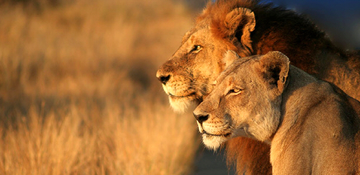
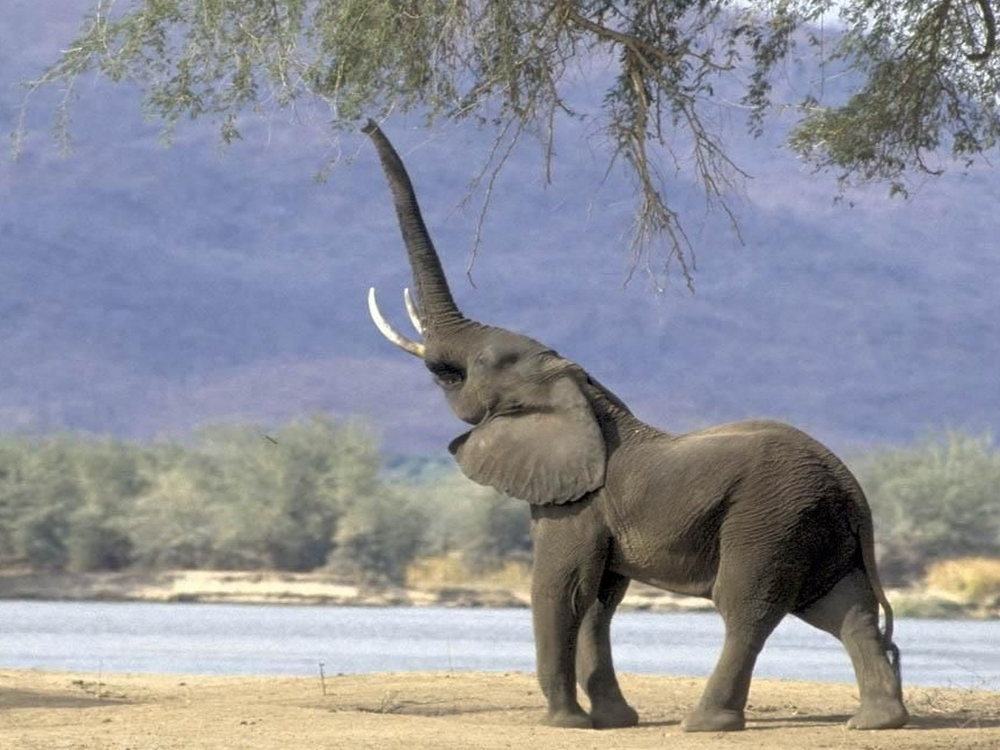
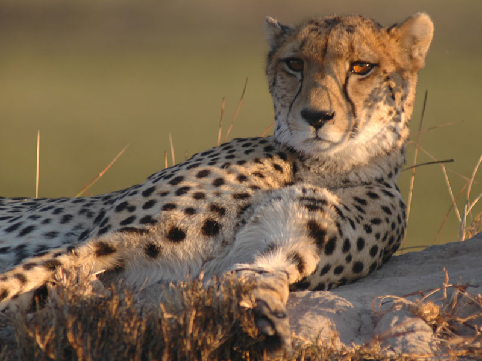
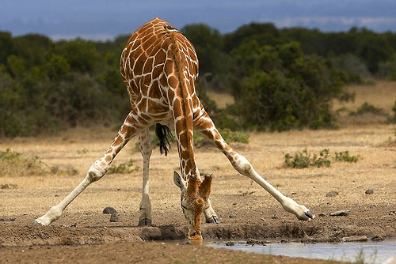
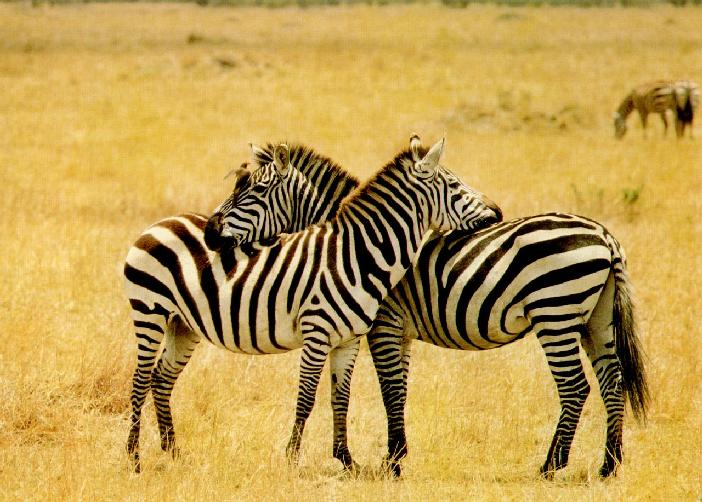

U našem safariju možete videti sve vrste životinja koje se inače nalaze u Afričkim savanama u svom prirodnom okruženju:
Lav je najveličanstvenija životinja u celom životinjskom carstvu. Lavovi imaju kratko, žuto-zlatno do tamno smedje krzno, a mužjaci imaju gustu i dugačku grivu koja je najčešće tamno smedja. Lav je od njuške do početka repa dugačak oko 180 cm, rep mu je dug 1 m. Postoje dve vrste lavova, prvi su Afrički koji nastanjuju prostore centrale i južne Afrike. Azijski lavovi u odnosu na Afričke se razlikuju po grivi koja je manje izražena, na žalost Azijski lavovi se nalaze na ivici istrebljenosti. Ukoliko čovek ne preduzme potrebne korake doćiće do potpune istrebljenosti ove vrste.

Afrički slonovi ranije su živeli na područiju izmedju Sahare i Južne Afrike i na područijima od zapadne obale Afrike do Atlantskog okeana pa sve do istočne obale Afrike, do Indijskog okeana. Dok je danas njihova populacija ugrožena. Zanimljiva činjenica je da slonovi nemaju znojne žlezde, pa im uši služe za rashladjivanje. Imaju jedinstven nos, surlu, obično dužine 150 cm i teška oko 135 kg. Slonovi jedu vegetaciju kao što je lišće, korenje, kora drveta, trava, voće. Životni vek slonova jedan je od najdužih u svetu sisara - oko 70 godina. Svaki dan mogu pojesti od 100 do 300 kg hrane i popiti i do 190 litara vode. Akt o čuvanju afričkog slona iz 1988. danas se provodi, a on zabranjuje bilo kakvo trgovanje slonovačom.

Gepard ima ekstremno dugačke noge, tanke noge i vitko telo. Glava je mala i okrugla, a rep dugačak. Na šapama ima debele ljuskaste jastučiće. Takva gradja tela omogućuje mu da u trku dostigne brzinu od 110 km/h. Gepardi su životinje aktivne danju, time izbegavaju susrete sa lavovima i hijenama. Nekada je gepardov životni prostor bio Afrika i Južna Azija, danas se može sresti isključivo u Africi i to južno od Sahare. Gepard je prava životinja savane. Savana daje prednost područijima s visokom travom koja pruža mogućnost prikradanja i s uzvišenjima koja koriste kao mesto s kojeg imaju dobar pregled nad okolinom.

Žirafa ima dugačak i snažan vrat, prekriven grivom koje čine kratke i oštre dlake. Vrat čini samo sedam pršljena. Vrat može da dostigne i dva metra. Ova životinja takodje ima izdužene prednje noge, oko 10% duže nego zadnje noge. Imaju veoma dugačak i lepljiv jezik. Jezik žirafe je dug do 45 cm i prekriven gustom pljuvačkom. Kada jede, ona ga uvija oko lišća i granja i vuče, takodje ga koristi za čišćenje očiju. Žirafa se hrani lišćem i granjem mimoze i akacije. Brsti krunu akacije i pritom bira spoljne, mlade listove koji imaju dva puta vise hlorofila od unutrašnje krune. Ona može da pojede 63 kg lišća i popije oko 30 litara vode dnevno, a da bi to uradila mora da razmakne prednje noge najviše što može, a često i da ih savije u kolenima.

Zebre žive u stepama i retkim šumama. Jedna porodica se obično sastoji od pastuva, nekoliko kobila i njihovih ždrebadi. Grupa porodica formira krdo. U Africi žive dve vrste zebri: planinska zebra i Grevijeva zebra, vrste zebri se medjusobno razlikuju po prugama. Zebra ima odlično čula vida, mirisa i sluha to joj služi da oseti približavanje zveri. Zbog tako dobrih čula gazele i ostali biljojedi nastoje da žive uz nju. Dok pasu zebre pažljivo osluškuju okolinu za bilo kakvim znakom opasnosti. Ukoliko primeti bilo kakvu opasnost zebra udari u bekstvo, druge životinje primetivši šta se desilo beže za njima.


© 2014 Uroš Jovanović ®